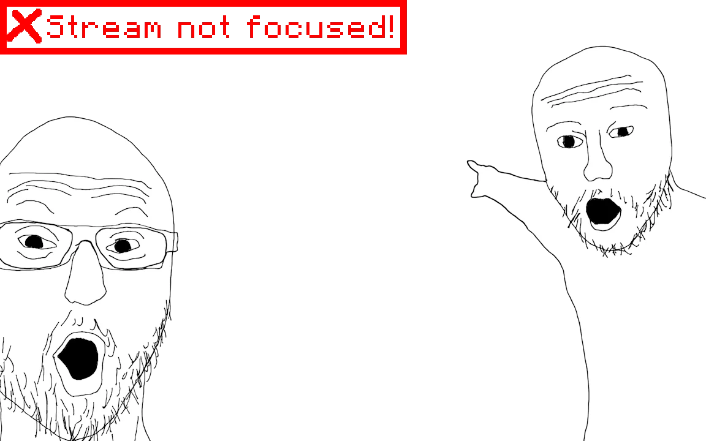

It's almost your turn, get ready!
Player queue
Your position
-
Players queued
-
Wait time
-
You know the 1993 classic DOOM? I made it run on an earbud, then I connected it to the internet and made it possible for visitors like you to sit in a queue for hours play the game remotely!.
Yeah but it won't just run on any old earbud, this only works with the Pinebuds Pro, the only earbuds with open source firmware.
You sure can! There are two relevant repos:
This was a necessary optimisation to avoid paying outgoing bandwidth fees, once you're 5th in the queue, the twitch player will switch to a low-latency MJPEG stream.
shhhh don't look don't look it's ok just join the queue
Let's switch to a more readable font first.
I'll put out an article / video diving deeper into this later, but here are a few bits of info:
This project is made up of four parts:
The firmware pushes up against a few hardware limitations:
Earbuds don't have displays, so the only way to transfer data to/from them is either via bluetooth, or the UART contact pads.
Bluetooth is pretty slow, you'd be lucky to get a consistent 1mbps connection, UART is easily the better option.
DOOM's framebuffer is (width * height) bytes, 320 * 200 = 96kB. (doom's internal framebuffer is 8-bit not 24-bit)
The UART connection provides us with 2.4mbps of usable bandwidth. 2,400,000 / 8 / 96,000 gives us... 3 frames per second.
Clearly we need to compress the video stream. Modern video codecs like h264 consume way too much CPU and RAM.
The only feasible approach is sending the video as an MJPEG stream. MJPEG is a stream of JPEG images shown one after the other.
I found an excellent JPEG encoder for embedded devices here, thanks Larry!
A conservative estimate for the average HIGH quality JPEG frame is around 13.5KB, but most scenes (without enemies) are around 11kb.
Theoretical maximum FPS:
- Optimistic: `2,400,000 / (11,000 * 8)` = 27.3 FPS
- Conservative: `2,400,000 / (13,500 * 8)` = 22.2 FPS
The stock open source firmware has the CPU set to 100mhz, so I cranked that up to 300mhz and disabled low power mode.
The Cortex-M4F running at 300mhz is actually more than enough for DOOM, however it struggles with JPEG encoding.
This is why it maxes out at ~18fps, I don't think there's much else I can do to speed it up.
By default, we only have access to 768KB of RAM, after disabling the co-processor it gets bumped up to the advertised 992KB.
DOOM requires 4MB of RAM, though there are plenty of optimisations that can reduce this amount.
Pre-generating lookup tables, making variables const, reading const variables from flash, disabling DOOM's caching system, removing unneeded variables. It all adds up!
The shareware DOOM 1 wad (assets file) is 4.2MB and the earbuds can only store 4MB of data.
Thankfully, fragglet, a well-known doom modder, has already solved this issue for me.
Squashware is his trimmed-down DOOM 1 wad that is only 1.7MB in size.
With this wad file, everything comfortably fits in flash.
I thought you'd never ask! (please hire me)